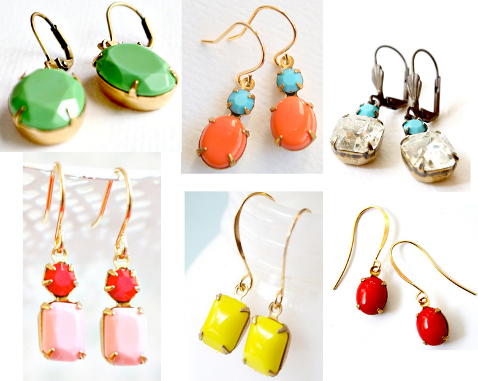

I’ve had this store favorited on Etsy for a while and I just love all the fun colors. I’m particularly drawn to all the dainty earrings, but they also have tons of other jewelry as well. I think these would be a perfect mother’s day gift!
Earrings that Pop!
April 23, 2013 by
Simple Necklaces
February 11, 2013 by

I don’t know what it is lately but I’ve been moving away from the chunky statement necklaces that I’ve always been drawn to. I seem to be eyeing more simple necklaces as opposed to crazy attention grabbing ones. These are all currently fav’d for me on Etsy.
red tribal necklace
3 brass rectangle necklace
Minimalist Geometric Gold Bar Necklace
Brass Necklace Artisan Brass Necklace with Hammered Arcs- Astor
Gold Chevron Necklace
Blue Lace Agate Geode necklace
Long Tribal Necklace
Gold Clear Double Faceted Crystal Bar Necklace
Gold Arrow Chevron Necklace
Bracelets Galore!
January 31, 2012 by

If you are looking for some any occasion dainty little bracelets, have I got an etsy store for you! Zzaval has got some SUPER cute and SUPER affordable bracelets. Â Best of all, most, if not all of the bracelets are made with an adjustable knot, so you can just slide it on and off easily.
Holiday Gift Guide: Bracelets
December 13, 2011 by

I do not know what it is about bracelets this year, but I can’t get enough of them! Here are a few I wouldn’t mind finding under the tree with my name on it:
Cowboy Boots + Leg Warmers
December 1, 2011 by

I’m in love with this picture above, specifically the bright colored leg warmers. Â I’m also in love with cowboy boots. Â I’m thinking I need to pair up some shorty cowboy boots with some leg warmers or cuffs via etsy and some jeggings. Â What say you?

Old Gringo Nevada 10″, Zappos
Dingo Women’s Adobe Rose 7″, Langston’s
Ariat Women’s Coloma 8″ , Langston’s
Dingo Women’s Metro 7″, Langston’s
Corral Women’s Eagle Stitched Distressed Crackle Saddle Boots 10″, Langston’s
Dingo 5 Below, Zappos
Ariat Women’s Shada Cowboy Boots 9″, Langston’s
Full Blossom Boots, Sundance Catalog
Fleece for the Littles
November 28, 2011 by

I went on a hunt for some new fleece hats on Etsy and ran across this adorable shop: mrs ptb makes all things awesome. She has some ADORABLE hats for girls and boys. Â These are just a few of the ones that I found, go check out the shop for more!
Simply Gold & Silver
August 18, 2011 by
I’ve been drawn to jewelry that combines both silver and gold together. Â I go through phases of wearing just silver and then times where I wear a lot of gold, so this is like the best of both worlds!
- Loop the Loop Earrings, Sundance
- Emboldened Earrings, Sundance
- Let Loose Earrings, Sundance
- Circle of Friends Earrings, Sundance
- Tiny Small Layering Necklace, The Dedication Company Etsy Shop
What do you wear more? Gold or silver?
In a Fight with a Peacock
August 2, 2011 by

Feather extensions are everywhere I look these days, taunting me to put one in my hair. Am I too old? Is it too trendy or far out there? These are the questions I ask myself over and over and I have yet to get one installed in these locks. What say you? Are feather extensions fab or would I look like I got in a fight with a peacock, as my husband puts it?
Etsy Spotlight: Mon Cadeau
August 1, 2011 by

There are many times when less is so much more. This is one of those times. I am completely smitten with the simple, clean and elegant jewelry in Mon Cadeau’s etsy shop. I would LOVE to own each and every one of these pieces. Â Take a look for yourself.
Etsy Spotlight: Little Things Studio
August 1, 2011 by
Little Things Studio is such a fun and whimsical find. It pairs great patterns with lovely quotes from legends such as E.E. Cummings and CoCo Chanel.  I love the words of wisdom on the prints and the unique geometric work. Framed this would add a burst of color and funk to any room.

If Everyone Is Thinking Alike Then Someone Isn’t Thinking

In Order To Be Irreplaceable One Must Always Be Different


It Takes Courage To Grow Up And Be Who You Really Are


Recent Comments